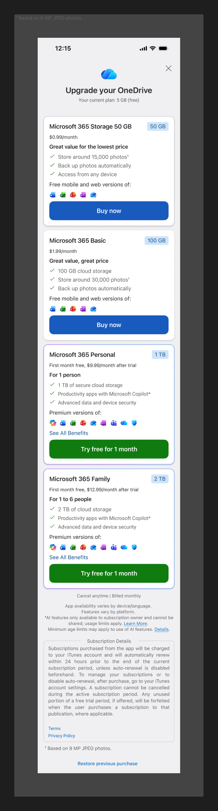
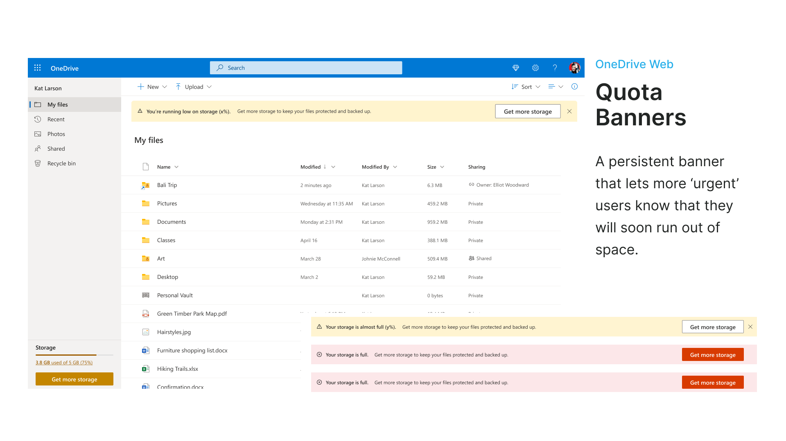
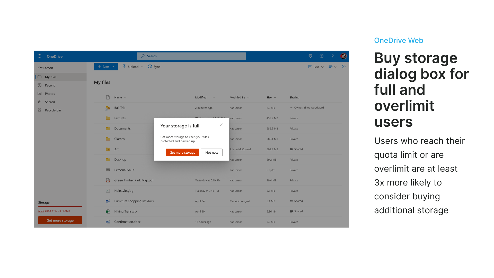
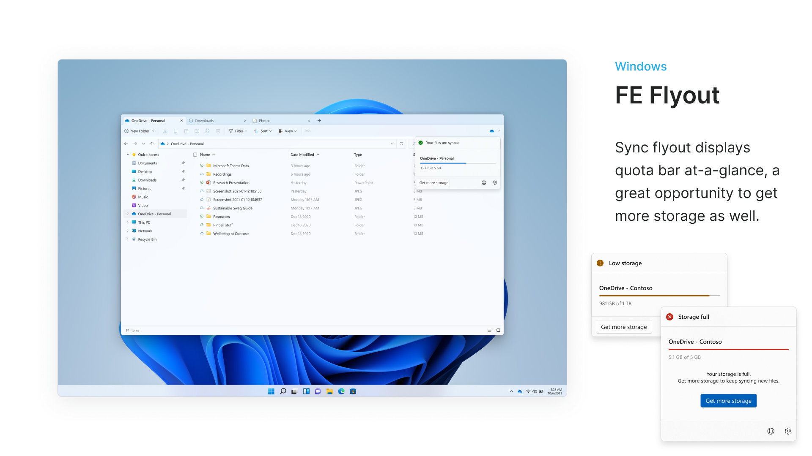
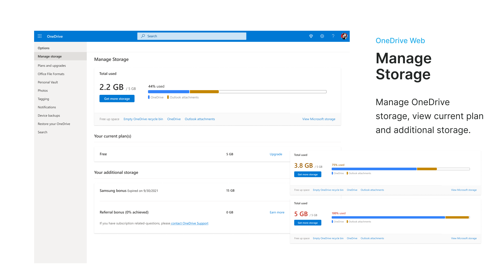

Monetization: Designing for Growth at Scale
Driving revenue and retention through seamless, user-centered monetization — designing every upgrade surface across OneDrive Web, iOS, Android, and Windows.

The right offer at the wrong moment
Users who reach their quota limit are at least 3× more likely to consider buying additional storage — yet OneDrive's upsell surfaces were fragmented, inconsistently timed, and often interruptive. Upgrade prompts appeared regardless of user intent, and the experience varied wildly across Web, iOS, Android, and Windows.
The challenge: design a complete, cross-platform monetization system that felt helpful at the right moment — not desperate at the wrong one.
Start with the reason to upgrade
Designed end-to-end upgrade flows across every OneDrive surface — quota banners, upsell dialogs, plan selection pages, post-purchase states, dunning flows, and seasonal campaigns. Built a reusable pattern system anchored to real user intent moments: storage pressure, backup failure, vault limits, and file upload errors.
Try the interaction
Local previewScroll the Android plans page to compare storage, included benefits, billing details, and terms.
The demo loads only from this device on localhost.
One approach, across every surface





Helpful, not interruptive
- Anchored every upsell to a real value moment. Storage pressure, upload failure, vault limit hit, backup blocked — each entry point was mapped to a specific user pain point. The message always explained why the upgrade was relevant right now.
- Progressive disclosure on plan comparison. Lightweight banner nudge first → deeper plan comparison only when the user clicked. Reduced abandonment from users who felt overwhelmed by plan options at the wrong moment.
- "Not ready to buy? Try it for free." Free trial CTA added to plan selection across all platforms — gave hesitant users an on-ramp without sacrificing conversion intent.
- Dunning designed for recovery, not alarm. Frozen account states were the highest-stakes messages. Tone was calm and action-oriented ("Update payment to restore access") rather than punitive.
- Standardized the cross-platform pattern library. Single set of quota state components — Nearing, Critical, Full, Over — shared across Web, iOS, Android, and Windows. Reduced divergence across platforms and engineering duplication.
Building across platforms
Collaborated with design partners across Web, Windows, iOS, and Android surfaces. Worked closely with PM, Content Design, and Engineering on experiment design, string reviews, and platform-specific constraints. Led cross-platform pattern alignment.
What changed
- Designed complete monetization system across Web, iOS, Android, and Windows — every quota state, upsell entry, plan selection, and post-purchase flow
- Users at quota are 3× more likely to upgrade — design system maximized capture at those moments
- Standardized pattern library adopted across 4+ platforms, reducing design and engineering duplication
- Seasonal campaigns (holiday, autumn, New Year) added contextual upsell peaks aligned to photo backup behavior
- Dunning flows designed to recover frozen accounts without user churn